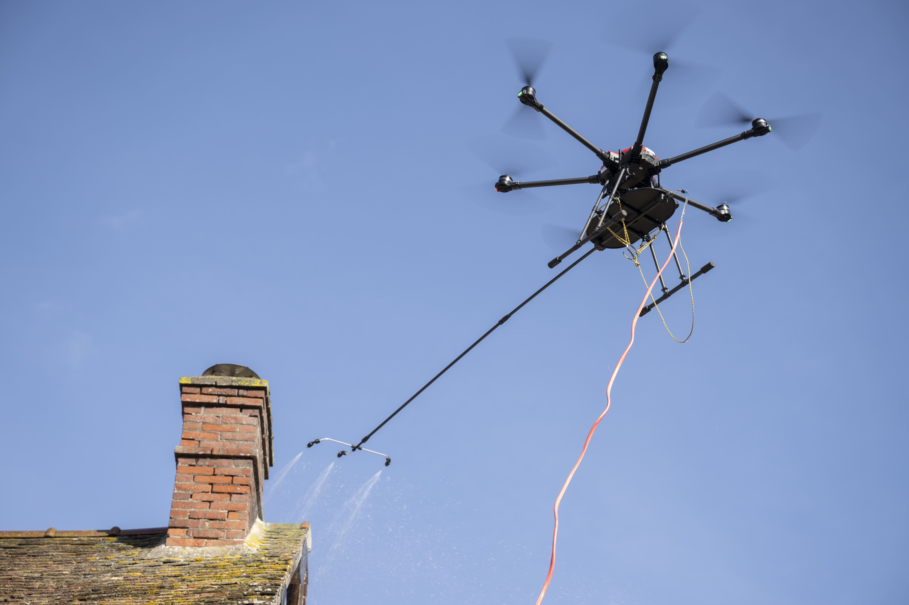
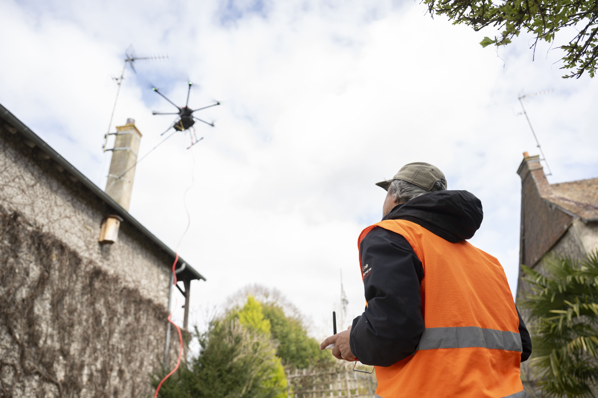

Présentation de l'entreprise
Toiture Aero Services (T.A.S.) est une entreprise spécialisée dans le traitement de toitures et façades par pulvérisation de produits fongicides au moyen de drones professionnels certifiés. La méthode employée repose sur une technologie innovante permettant d’intervenir sur des propriétés de particuliers, des bâtiments publics et professionnels sans contact, sans échafaudage ni nacelle, tout en garantissant un haut niveau de sécurité. Lieu d'intervention dans les départements 27 / 28 / 78
Moyens humains et qualifications

Technologie avancée
Nos drones sont équipés de capteurs de précision et de jets d’eau haute pression adaptés à chaque type de toiture.

Écologique
Nous utilisons uniquement de l’eau et des techniques respectueuses de l’environnement pour un nettoyage durable.

Sécurité garantie
Nos drones évitent tout contact avec vos tuiles fragiles et éliminent le risque pour les techniciens de monter sur le toit.
Prêt à redonner de l'éclat à votre toiture ?
Contactez-nous dès maintenant pour un devis personnalisé et rapide.
Obtenez votre devis